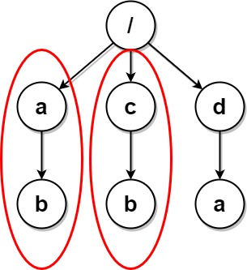

Due to a bug, there are many duplicate folders in a file system. You are given a 2D array paths, where paths[i] is an array representing an absolute path to the ith folder in the file system.
- For example,
["one", "two", "three"]represents the path"/one/two/three".
Two folders (not necessarily on the same level) are identical if they contain the same non-empty set of identical subfolders and underlying subfolder structure. The folders do not need to be at the root level to be identical. If two or more folders are identical, then mark the folders as well as all their subfolders.
- For example, folders
"/a"and"/b"in the file structure below are identical. They (as well as their subfolders) should all be marked:/a/a/x/a/x/y/a/z/b/b/x/b/x/y/b/z
- However, if the file structure also included the path
"/b/w", then the folders"/a"and"/b"would not be identical. Note that"/a/x"and"/b/x"would still be considered identical even with the added folder.
Once all the identical folders and their subfolders have been marked, the file system will delete all of them. The file system only runs the deletion once, so any folders that become identical after the initial deletion are not deleted.
Return the 2D array ans containing the paths of the remaining folders after deleting all the marked folders. The paths may be returned in any order.
Example 1:
Input: paths = [["a"],["c"],["d"],["a","b"],["c","b"],["d","a"]] Output: [["d"],["d","a"]] Explanation: The file structure is as shown. Folders "/a" and "/c" (and their subfolders) are marked for deletion because they both contain an empty folder named "b".
Example 2:

Input: paths = [["a"],["c"],["a","b"],["c","b"],["a","b","x"],["a","b","x","y"],["w"],["w","y"]] Output: [["c"],["c","b"],["a"],["a","b"]] Explanation: The file structure is as shown. Folders "/a/b/x" and "/w" (and their subfolders) are marked for deletion because they both contain an empty folder named "y". Note that folders "/a" and "/c" are identical after the deletion, but they are not deleted because they were not marked beforehand.
Example 3:

Input: paths = [["a","b"],["c","d"],["c"],["a"]] Output: [["c"],["c","d"],["a"],["a","b"]] Explanation: All folders are unique in the file system. Note that the returned array can be in a different order as the order does not matter.
Example 4:

Input: paths = [["a"],["a","x"],["a","x","y"],["a","z"],["b"],["b","x"],["b","x","y"],["b","z"]] Output: [] Explanation: The file structure is as shown. Folders "/a/x" and "/b/x" (and their subfolders) are marked for deletion because they both contain an empty folder named "y". Folders "/a" and "/b" (and their subfolders) are marked for deletion because they both contain an empty folder "z" and the folder "x" described above.
Example 5:

Input: paths = [["a"],["a","x"],["a","x","y"],["a","z"],["b"],["b","x"],["b","x","y"],["b","z"],["b","w"]] Output: [["b"],["b","w"],["b","z"],["a"],["a","z"]] Explanation: This has the same structure as the previous example, except with the added "/b/w". Folders "/a/x" and "/b/x" are still marked, but "/a" and "/b" are no longer marked because "/b" has the empty folder named "w" and "/a" does not. Note that "/a/z" and "/b/z" are not marked because the set of identical subfolders must be non-empty, but these folders are empty.
Constraints:
1 <= paths.length <= 2 * 1041 <= paths[i].length <= 5001 <= paths[i][j].length <= 101 <= sum(paths[i][j].length) <= 2 * 105path[i][j]consists of lowercase English letters.- No two paths lead to the same folder.
- For any folder not at the root level, its parent folder will also be in the input.